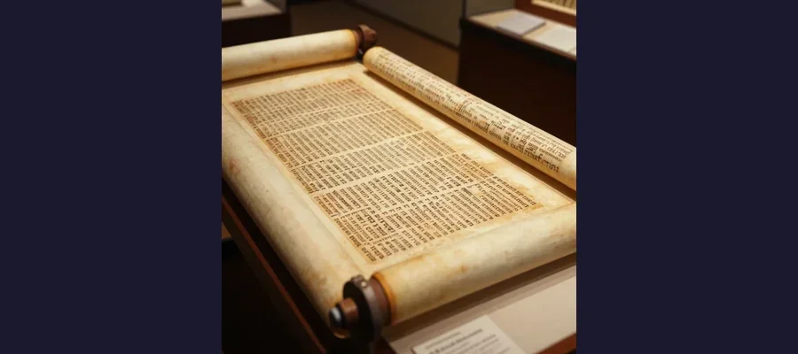

Dead Sea Scrolls: The 2,000-Year-Old Texts That Rewrote Biblical History

The caves of Qumran, overlooking the Dead Sea, where Bedouin shepherds discovered the first scrolls in 1947 - launching the greatest archaeological find of the 20th century.
In 1947, three Bedouin shepherds wandered into a cave in the limestone cliffs above the Dead Sea, chasing a lost goat. One of them tossed a stone into the darkness and heard something shatter. Climbing inside, he found tall clay jars, some intact, some now broken by his stone. Inside the jars were ancient scrolls wrapped in linen, darkened by two millennia of desert air. He had no idea he had just stumbled upon what many scholars consider the single most important archaeological discovery of the twentieth century: the Dead Sea Scrolls.
What followed was one of the most extraordinary chapters in the history of scholarship. Over the next decade, archaeologists and Bedouin treasure hunters would explore eleven caves near the ruins of Khirbet Qumran, eventually recovering approximately 981 texts — including the oldest known copies of the Hebrew Bible by roughly a thousand years. These fragile manuscripts, written between 250 BCE and 68 CE, would upend assumptions about biblical texts, reveal a forgotten Jewish sect with apocalyptic visions, and ignite controversies that continue to this day.
The Dead Sea Scrolls are not a single document but an entire library — biblical texts, community rules, hymns, commentaries, astronomical calculations, and one very peculiar treasure map made of copper. Together, they open a window into a pivotal moment in human religious history: the crucible out of which both modern Judaism and Christianity emerged.
The Accidental Discovery That Changed Everything
The story begins, as so many great archaeological discoveries do, with luck. In late 1946 or early 1947, a young Bedouin shepherd named Muhammed edh-Dhib (also known as Muhammad Ahmed al-Hamed) was tending his flock near the northwestern shore of the Dead Sea in what was then the British Mandate of Palestine. When one of his goats strayed, he threw a stone into a cave opening in the cliffs and heard pottery break. Several days later, he returned with companions and climbed into what is now called Cave 1.
Inside, they found seven large clay jars containing scrolls wrapped in decayed linen. The shepherds had no idea what they had found. They took the scrolls to a dealer in Bethlehem, who eventually sold them to Mar Samuel, the Metropolitan of the Syrian Orthodox Church in Jerusalem, and to Professor Eliezer Sukenik of the Hebrew University. Sukenik immediately recognized their significance. The world of biblical scholarship would never be the same.
Between 1949 and 1956, systematic excavations of the area revealed ten more caves containing scrolls and fragments. Cave 4 alone yielded approximately 15,000 fragments from roughly 500 different manuscripts. The dry, arid climate of the Dead Sea region — one of the lowest and driest places on Earth — had preserved these animal-skin parchments and papyrus documents for over two thousand years in conditions that would have destroyed them almost anywhere else.
- Cave 1 (1947): The original seven scrolls, including the Great Isaiah Scroll and the Community Rule
- Cave 2 (1952): Additional biblical and sectarian fragments
- Cave 3 (1952): The unique Copper Scroll, a metal treasure map listing 64 hiding places for gold and silver
- Cave 4 (1952): The largest cache — roughly 15,000 fragments from approximately 500 manuscripts
- Caves 5–10 (1952–1956): Additional scrolls and fragments in smaller quantities
- Cave 11 (1956): The Temple Scroll, the longest scroll found at over 8 meters (26 feet)
📜 The Longest Scroll
The Temple Scroll, discovered in Cave 11 in 1956, is the longest of the Dead Sea Scrolls at 8.15 meters (26.7 feet). It contains detailed instructions for building a temple and regulations for purity and sacrifice. Some scholars believe it was considered authoritative scripture by the Qumran community, potentially a "sixth book of the Torah." Its sheer length and careful composition suggest it was not a draft but a finished, treasured document.

The Great Isaiah Scroll, dating to around 125 BCE, is the oldest complete copy of any biblical book and one of the most treasured artifacts from the Qumran caves.
The Great Isaiah Scroll
Of all the Dead Sea Scrolls, none has captured public attention quite like the Great Isaiah Scroll (1QIsaa). Found in Cave 1 and dating to approximately 150–100 BCE, it contains the entire Book of Isaiah — all 66 chapters — making it the oldest complete copy of any biblical book by roughly a thousand years. Before the scrolls' discovery, the oldest known complete Hebrew Bible manuscripts dated to around 1008 CE (the Leningrad Codex).
The scroll is written on 17 sheets of parchment sewn together, measuring about 7.34 meters (24 feet) in length with 54 columns of text. Radiocarbon dating has yielded calibrated date ranges between 356 and 103 BCE. What makes the Isaiah Scroll particularly significant is that its text, while broadly matching the Masoretic Text that forms the basis of modern Hebrew Bibles, contains numerous small variations — spelling differences, added words, and slight rephrasings. These variations reveal that biblical texts were fluid and evolving before they were standardized, a finding that transformed biblical scholarship.
The Essenes: Monks Before Monks?
The most widely accepted theory about who wrote and collected the Dead Sea Scrolls points to a Jewish sect known as the Essenes. Described by contemporary historians including Flavius Josephus, Philo of Alexandria, and Pliny the Elder, the Essenes were a strict, ascetic Jewish community that practiced ritual purity, communal ownership of property, celibacy (in some branches), and intensive study of scripture. Pliny the Elder specifically located an Essene community near the Dead Sea, in the area where Qumran stands.
Archaeological excavations of the Khirbet Qumran site, conducted primarily by Father Roland de Vaux of the École Biblique in Jerusalem between 1951 and 1956, revealed a complex of buildings that included ritual baths (mikva'ot), a communal dining room, a pottery workshop, a scriptorium with inkwells and writing benches, and a cemetery with over 1,100 graves. This layout is consistent with a communal religious settlement, and many scholars believe the Essenes lived and worked here, copying scrolls and composing their own texts.
However, the Essene theory is not without challengers. Some scholars argue that the scrolls represent a diverse collection from multiple Jewish groups, not just one sect. The Jerusalem origin theory, for instance, proposes that the scrolls were part of the library of the Second Temple in Jerusalem, smuggled out and hidden in the caves during the Roman siege of the city in 70 CE. Still others suggest the community was Sadducean rather than Essene. The debate remains unresolved and active.
🔬 Science Confirms the Age
Radiocarbon dating has been applied to the Dead Sea Scrolls multiple times, most notably in a comprehensive 1991 study and again in a 2013 study using accelerator mass spectrometry (AMS). The results consistently place the scrolls between 250 BCE and 68 CE, confirming paleographic estimates that had been based on the style and evolution of Hebrew letter forms. The 2013 tests on the Book of Daniel fragment dated it to between 167 and 302 BCE, making it one of the oldest scrolls in the collection and lending support to a traditional rather than late dating of the biblical book.
The Shrine of the Book in Jerusalem, with its distinctive white dome shaped like a scroll jar lid, houses the Dead Sea Scrolls and rotates them to minimize light damage.
A Bible That Breathed: What the Scrolls Revealed
Before the Dead Sea Scrolls, scholars studying the Hebrew Bible relied on medieval manuscripts. The oldest complete Hebrew Bible was the Leningrad Codex (1008 CE), and the oldest substantial fragments were from the Cairo Geniza (9th–11th centuries). This meant there was a gap of over a millennium between the biblical texts' original composition and the earliest surviving copies. The Dead Sea Scrolls closed that gap dramatically, pushing the textual record back by roughly 1,000 years.
The scrolls contain portions of every book of the Hebrew Bible except Esther (though even this absence is debated — some fragments may be from Esther). The most frequently represented books are Psalms, Deuteronomy, Isaiah, Genesis, and Exodus. Beyond biblical texts, the collection includes apocryphal and pseudepigraphal works (such as the Book of Enoch and Jubilees), sectarian documents (the Community Rule, the War Scroll, the Damascus Document), and practical texts including calendars and astronomical calculations.
The most significant scholarly finding was that biblical texts were not fixed but fluid. Before the scrolls, many assumed that scribes had transmitted the Hebrew Bible with near-perfect accuracy over centuries. The scrolls showed that multiple textual traditions coexisted. Some scrolls match the Masoretic Text closely; others align more with the Septuagint (the Greek translation of the Hebrew Bible); and still others represent entirely unknown textual traditions. This revelation — that the Bible was once a living, evolving document — has had profound implications for how both scholars and religious communities understand scripture.
- 981 texts recovered from 11 caves near Qumran between 1947 and 1956
- Portions of every Hebrew Bible book except Esther were found
- The scrolls are approximately 1,000 years older than the previously oldest known Hebrew Bible manuscripts
- Multiple textual traditions coexisted, showing the Bible was not standardized until later than previously thought
- The Copper Scroll uniquely lists 64 locations where vast quantities of gold and silver were hidden
- The scrolls include texts in Hebrew, Aramaic, and Greek
🏛️ The Shrine of the Book
The Dead Sea Scrolls are displayed at the Shrine of the Book, a wing of the Israel Museum in Jerusalem. The building itself is a striking piece of architecture: a white dome shaped like the lid of one of the clay jars in which the scrolls were found, sitting above ground level, with two-thirds of the structure built underground. Inside, the Great Isaiah Scroll is displayed in a climate-controlled case, rotated periodically to show different sections and minimize light damage. The shrine also houses a facsimile of the Copper Scroll. The contrast is poetic: texts that survived two millennia in desert caves now rest in a building shaped like the very jars that protected them.
New Frontiers: AI, Forgeries, and Ongoing Mysteries
Research on the Dead Sea Scrolls continues to generate headlines. In recent years, artificial intelligence and multispectral imaging have been used to read previously illegible fragments, identify scribal hands, and detect forgeries. In 2002, a collection of purported Dead Sea Scroll fragments appeared on the antiquities market, many acquired by the Museum of the Bible in Washington, D.C. In 2018–2020, rigorous scientific analysis confirmed that all 16 of the museum's fragments were modern forgeries — cleverly crafted fakes with ancient-looking ink applied to genuinely old parchment.
In 2021, archaeologists announced the discovery of Cave 12 — the first new scroll cave identified in over 60 years, though the cave had been looted in antiquity and contained no intact scrolls. New fragments continue to be identified among previously excavated material using advanced imaging techniques. In 2018, researchers using multispectral imaging revealed previously invisible text on fragments that had appeared blank, identifying lines from the books of Leviticus and Deuteronomy.
Like the Voynich Manuscript, the Antikythera Mechanism, and even Gobekli Tepe, the Dead Sea Scrolls remind us that the past always has secrets left to yield. Each new technique — from radiocarbon dating to DNA analysis of the animal skins to artificial intelligence — peels back another layer of mystery.
📜 Two Thousand Years in a Jar
The Dead Sea Scrolls survived because of a near-miraculous convergence of conditions: the bone-dry desert air above the Dead Sea, the sealed clay jars that protected them from moisture and insects, and the caves that shielded them from the elements and from human destruction. They were written during one of the most turbulent and consequential periods in human religious history — the centuries that gave birth to rabbinic Judaism and Christianity — and they survived long enough to speak to an age that could finally understand their significance. What they tell us is that sacred texts were never static. They were debated, revised, reinterpreted, and fought over, just as they are today. The scrolls do not diminish the Bible; they make it more human, more complex, and in many ways more remarkable. They are, in the truest sense, a message in a bottle from two thousand years ago — and we are still reading it.
Frequently Asked Questions
Who found the Dead Sea Scrolls?
The scrolls were discovered in 1946–1947 by Bedouin shepherds near the Dead Sea. A young shepherd named Muhammed edh-Dhib threw a stone into a cave while searching for a lost goat and heard pottery break. Inside, he found clay jars containing seven ancient scrolls. The discovery set off a decade of archaeological exploration that ultimately recovered approximately 981 texts from 11 caves near the ruins of Khirbet Qumran.
Do the Dead Sea Scrolls contradict the Bible?
The scrolls do not contradict the Bible in the way sensational headlines sometimes suggest. What they reveal is that multiple textual versions of biblical books coexisted before the text was standardized. The Great Isaiah Scroll, for example, matches the standard Hebrew text of Isaiah very closely, with mostly minor spelling and grammatical differences. However, some scrolls show more significant variations, aligning with the Greek Septuagint or representing entirely unknown textual traditions. Rather than contradicting scripture, the scrolls show the rich and complex process through which biblical texts were transmitted and preserved.
What is the Copper Scroll?
The Copper Scroll is one of the most mysterious of the Dead Sea Scrolls. Unlike the others, which are written on parchment or papyrus, it is inscribed on thin sheets of copper mixed with about 1 percent tin. Found in Cave 3 in 1952, it lists 64 locations where vast quantities of gold, silver, and precious objects were hidden — potentially worth billions of dollars in modern terms. Some scholars believe it records the hiding places of treasures from the Second Temple in Jerusalem, smuggled out during the Roman siege of 70 CE. No treasure described in the Copper Scroll has ever been found. Learn more in our dedicated article about the Copper Scroll treasure.
Where are the Dead Sea Scrolls today?
The largest collection of Dead Sea Scrolls is housed at the Shrine of the Book, part of the Israel Museum in Jerusalem. Additional scrolls and fragments are held by the Rockefeller Museum in East Jerusalem and the Jordan Museum in Amman, Jordan (including the Copper Scroll). High-resolution digital images of the scrolls are freely available online through the Israel Antiquities Authority's Leon Levy Dead Sea Scrolls Digital Library, allowing anyone in the world to examine these ancient texts in extraordinary detail.
📖 Recommended Reading
Want to learn more? Check out The Dead Sea Scrolls Bible: The Oldest Known Bible Translated for the First Time into English on Amazon for a deeper dive into this fascinating topic. (As an Amazon Associate, we earn from qualifying purchases.)
References & Further Reading
- Wikipedia: Dead Sea Scrolls — Discovery, contents, dating, and scholarly significance
- Wikipedia: Isaiah Scroll — The Great Isaiah Scroll and its textual variants
- Wikipedia: Copper Scroll — The metal treasure map found in Cave 3 at Qumran
- Britannica: Dead Sea Scrolls — Overview of discovery, dating, and significance
- Biblical Archaeology Society: Dating the Copper Scroll — Analysis of the enigmatic treasure scroll
- Library of Congress: Scrolls from the Dead Sea — Two Thousand Years Later
- Wikipedia: Essenes — The Jewish sect believed to have composed the Dead Sea Scrolls
Editorial note: reconstructions are continuously revised as imaging and inscription studies improve. See our Editorial Policy.